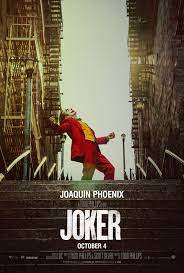

Favorite Movies
Most of my favorite movies follow a specific genre: horror or action adventure. The following is a list of some of my favorite movies in no particular order. The following is a list of movies that I truly enjoyed and found little to none problems of storytelling.
Hereditary
The first on the list is "Hereditary". "Hereditary" was produced by A24 Films, and directed and written by Ari Aster. Aster's inital recognition came from the short film "The Strange Thing About the Johnsons". "Hereditary" earns a spot on this list simply because of the style in which it was directed and written. When I first saw the film, I was disturbed in the gore and the underlying tone of something being wrong but not necessarily knowing what the problem is at the time. Ari Aster has a way of giving the viewers enough pieces to put the film together but at the same time also question what they watch.
Tenet
"Tenet" was written and directed by Christopher Nolan, whose film making history needs no introduction. Nolan has directed and written over 10 films which has not been an easy task. However Nolan does not specfically direct or write a center type of movie. Nolan's directing history covers historical dramas to sci-fi thrillers. However, "Tenet" was not well recieved by many. Instead, in the third weekend "Tenet" earned $4.7 million domestically over its third weekend, bringing the North American gross $36.1 million. Which is not a terrible outcome by any means, but it did fail to break even with the movies estimated $400 million break even point. While "Tenet" can be difficult to understand and keep up with at times, the movie provides an original concept with beautiful and intense scenarios.
The Lord of the Rings Triliogy
The Lord of the Rings trilogy has always had a special place in my heart. These were the movies I grew up watching as a kid. It would be easier for me to count the stars in the sky rather than counting the number of times I have seen The Lord of the Rings trilogy. There are a few parts in the movie that is very slow, however, even after 20 years the trilogy still holds up very well. Besides of the importance of the movie to me, the trilogy has won 475 awards out of 800 nominations. The Lord of the Rings series will always be remembered in cinematic history for the creative directing, writing, visuals, and overall tone of movie.
Joker

"Joker" is a movie that came out in 2019 and out of 245 nominations it has 121 awards. Joaquin Phoenix was absolutely incredible in this movie. He gave an amazing protrayal to someone that has mental illnesses and also gave an amazing Joker laugh. "Joker" was a movie that I thoroughly enjoyed seeing because throughout the movie, you can slowly see the mental decline his character, Arthur, goes through. You can see the mental illness starting to take control and ultimately encits a riot at the end of the movie in protest against Gotham's richest.